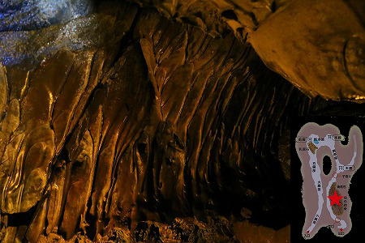

前回訪れた
船津胎内樹型の溶岩洞窟の神秘っぷりがあまりにも面白かったので、またしても行って来ました.
場所は静岡県御殿場市。
前回の船津が富士山の北麓だったが今回は南東麓。
いわゆる東富士演習場に隣接した洞窟だ。
ここは正式には
印野の熔岩隧道といい、一般には
御胎内と呼ばれている。
という訳で前回の洞窟探索は単独行で泣くほど不安だったので今回は数名で冨士洞窟キャラバン隊を組んでの出撃。
とりあえず懐中電灯と雨具のズボンを持参しての洞窟探索と相成ったわけである。
御胎内の場所は御胎内清宏園という有料の公園（というか森）の中にある。
そう言えば先日訪れた船津胎内樹型も河口湖フィールドセンターという施設が管理していた。
通常、信仰の場は神社などが管理するものなのだが、何らかの事情があるのだろうか？いや判んないけど。
入り口で入場料を払う際、受付のおばちゃんから「御胎内の中は暗くて狭いから気を付けてねー」的な説明を受けた。
あまりのライトな口調に「おや、懐中電灯は兎も角、雨具のズボンはやり過ぎだったかな？」などと思ってしまった。
…で、園内へ。
富士山麓らしい清潔感のある森を歩いていくと夫婦岩があった。
これも富士山の熔岩で、丁度夫婦のように二つの岩があり、安産にご利益があるとかないとか。
さらに進むと、熔岩がなぜか金網のケージの中に飾られていた。
…これってかつては鳥でも飼っていたのではなかろうな…。
そんなこんなでようやく森の中から神社の社殿が現れる。
御胎内神社である。
有料の公園の中にある神社、というのもイマイチ位置付けが難しい。
しかし弘法大師が開いたといわれる歴史ある神社（当時は神仏並祀）なのだとか。
そんなありがた〜い神社の傍らに御胎内の入り口がぽっかりと口を開けている。
説明板によれば
全長は68ｍ、西暦390年〜550年頃に誕生した洞窟だという。
ここも船津胎内樹型同様、複数の大木が折り重なって倒れた上に溶岩が覆いかぶさって出来た複合熔岩樹型だ。
内部はUの字状の通路になっており、途中脇道のようなところもあり、何だか浜崎あゆみのマークみたいな感じだな。
隧道見学の注意。
この隧道の中にある安産石に触れてお願いすると安産に良いとな。
…というわけで早速入洞！
内部は所々灯りがあるのだが、足元は手持ちのライトがないと危険。
というわけで手持ちのライトを点灯。
うわー、この明るさで進めるのー？
最初は父の胎内の大腸小腸部。
船津胎内樹型でも思ったが、
どうも一般の胎内巡りと趣が違う。
普通胎内巡りって母の胎内を巡って産まれかわるものだが…。
コレは私見だが、真言密教系の洞窟霊場ではよく胎蔵界と金剛界に分かれている場合がある。
元々富士山信仰は大日如来を本尊としていたから、ここの洞窟も真言密教マナーに従って胎蔵界と金剛界という別け方をしていたのかも知れない。
その後、富士山の本尊は木花咲耶姫に変わった辺りから真言密教系の影響力が薄まり、それまでの胎蔵界と金剛界から成る世界観をムリクリ父の胎内と母の胎内という世界観に変えてしまったのではないだろうか？
いや、あくまでも私見ですよ。しかも今思いついただけの。
ただ、この洞窟の存在をもって弘法大師が霊場を開いたというのであれば、真言密教のマスターである大師サマの事だ。
この洞窟を見たら絶対「こっち金剛界！こっち胎蔵界！」って言ったと思うんですよねー。
いや、あくまでも私見ですよ。
…と、妄想を膨らませかねない程、父の胎内、母の胎内という分類方法に違和感を感じたわけです。
他にも
父の胎内巡りという概念って他にもあるんだろうか？
ご存知の方、いらっしゃいましたら御教授賜りたく候。
…とどのつまり腑に落ちないのは、父ちゃんの尻から神聖なる御胎内に入るってとこですよね…。
うわ。書いてて具合悪くなってきたぞ。許してくれ、父ちゃん。そして富士山。
…というわけでしばし進むと、乳房石という札が見えてきた。
この辺りから段々母の胎内要素が強くなってくる。
熔岩が上からポタポタ垂れてる途中で凝固したので先端が乳のように尖ってるわけです。
江戸時代に溶岩洞窟を参詣している人々がこのようなおっぱい岩をチューチュー吸ってる絵があって凄く面白かったです。
（↑画像は船津胎内樹型を描いたもの）
あ、薄々お気づきの方も多いと思われますが、今回洞内の画像は大体こんなクオリティで最後まで行きます。
ほとんど照明なしフラッシュなしの手持ちのペンライトで照らした超判りにくい画だらけです。
皆様の豊富な想像力だけが頼りですので御協力のほどよろしくお願いいたしますよー。
…せめてどの位置にいるかだけ判るように画中に現在地を示しております。
…というわけで、再深部辺りに達した。
精水池という水溜り、前殿という小さな石祠がある。
それを過ぎると
本殿と呼ばれる小さな石祠が。
いわばココがこの洞窟の最深部であり、信仰のキモな訳だ。
本殿を拝したところで、何となく気分は帰り道。
臍帯部（つまりへその緒）を通り過ぎて、何となく出口ももうすぐか？的な雰囲気になってきたような気がしてきたぞ！
結構暗くて狭かったけど、船津胎内樹型ほどじゃないなー、などと同行した二番槍の
大魔王君に軽口をかます余裕を見せる私。
本殿に続き、奥殿。
その奥の狭い洞窟は「奥を知らず」と書かれていた。恐らく先には行けないのだろう。
うむ、ではその先の
子返りに向かうとしよう。
しかし！
…その先を見て口あんぐり。
…え？ここ通れるんですか？
これか、入り口のところに書いてあった高さ1ｍ以下の場所というのは…。
いきなりの難所登場に怯むわれら冨士洞窟キャラバンメンバー。
しかし先遣隊の私（まあ、メンバーの中で容積の一番多い私が先に行けばその後の人は全員通れるだろう、という予測の基に先遣隊を買って出たわけだが）が行かねば隊の士気に関わるではないか！
四つんばいになり、子返りの難所を必死に進む。
あ、カメラが岩壁に擦れてゴリゴリいってる！ごめんよ！ロドリゲス（マイカメラの名前ね）！
頭の中では、受付のおばちゃんの「気を付けてねー」と言っていた顔がフラッシュバック。
おいおい、そんな軽い感じじゃ全然ないんですけどお！
やっとの事で難所を抜け出た。
と、目の前には安産石が。
そういえば入り口の看板にこの安産石に触ると安産できるとか書いてあったような気がするけど…。
妊婦さんは絶対ダメ！ココ来ちゃ！安産どころじゃない騒ぎ（惨劇）になっちゃうから！
予想を上回る難所に難儀する二番槍の大魔王君。
しかし私よりスリムなので案外楽に通り抜けてるところが、見ててムカつく！

で、母の肋骨。
この辺、凄くギーガーっぽくてカッコイイ！
…と、エイリアン大好き&映画「エイリアン・コヴェナント」&「H・R・ギーガーの世界」を観たばかりの私は大興奮！
…しかし興奮は長くは続かなかった。
肋骨&安産石のやや広い空間に出て安堵したものの、次の「順路←」と書かれた看板を見てまたしても口あんぐり。
さらに狭い洞穴が待ち受けていたのだ！
どうやらここが産口、つまり最終難関らしい。
…もうここまで来たら行くしかない！
と意を決して腹ばいになって進みましたよ。生きて生還するために。
勿論頭の中では「気を付けてねー」と送り出してくれた
受付のおばちゃんの満面の笑顔。
嗚呼、ココで洞穴にハマって死んだら走馬灯のラストシーンはあんたの笑顔だよ！などと思いつつ、産道に挑む！
勿論、キャラバン全員でバブバブ言いながらの突入ですよ！
四つん這いになり何とか狭い難所を抜け出せた！
しかし、後続の皆さんは私ほどは苦労してなかった様子。
足から先に出れば結構大丈夫っすよー、だって。
逆子で安産かよ、難産は俺だけかよ…トホホ…。

で、やっとのことで産口を抜け出て、御胎内の出口へ。
勿論ここでもお約束の雄叫び。
ボク、産まれたよ〜！
出口の前には噴火の際に出来た妙なカタチの熔岩が仏像のように祀られていた。
周囲の熔岩はコケに覆われていて、神秘的な雰囲気を醸しだしていた。
この一帯は300年前の噴火の際、熔岩に覆われたという。
不毛の地も300年あればこれだけ豊かな森になるのだ。
入り口にはメチャ軽装の方々が御胎内に入ろうかどうしようか逡巡している御様子。
悪いことは言わない、その軽装で中に入るのは止めた方がいいぞ。
特にロングコートにマフラーの君。絶対無理だぞ。
…と心の中で止めてみるものの、結局中に入っていった。
彼らが生きて生還できたかどうかは確認できなかったが、ニュースで事故の報はなかったので途中で諦めたか、ドロドロになって抜け出したか、どちらかなのだろう。
…という訳でこの後、勢い余ってまたしても船津胎内樹型に行ってしまいましたよ…。
面白き！熔岩樹型！